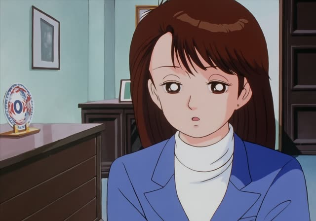
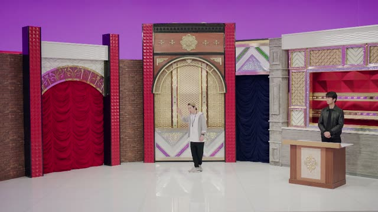
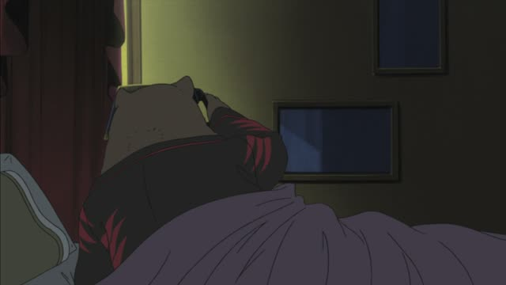
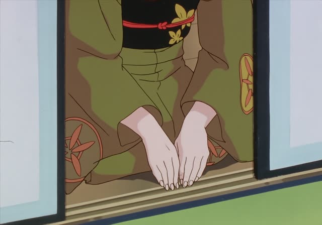

Humble verbs (謙譲語)
Samurai Champloo · Episode 15
滝川と申します。
"My name is Takigawa."
Humble verbs lower yourself (or your side) to show respect to the other person. Common ones: 言う → 申す, 行く・来る → 参る, する → いたす, いる → おる, 聞く・訪ねる → 伺う.
On this card, a woman introduces herself to guests. ～と申します is the standard polite way to give your name.
You only use them about yourself or your own group, never about the listener.
Quartet · Episode 1
はい。一旦戻って、夕方参ります。
"Yes. I'll head back and come in the evening."
On this card, the quartet agrees to play at a restaurant. 参ります = the humble 来ます / 行きます.
Quick Examples
Answering the phone at work.
はい、山田でございます。
"Yes, this is Yamada."
In business, your own company is lowered too.
PoliteVisiting a client.
明日、会社に伺います。
"I'll visit your office tomorrow."
伺う = 行く (humble).
PoliteA clerk at a store.
すぐにご案内いたします。
"I'll show you right away."
いたす = する.
PoliteOn the phone.
部長は今、席を外しております。
"The manager is away from his desk."
Your own boss, to an outsider: humble.
PoliteWith and without
山田です。
"I'm Yamada." Polite.
山田と申します。
"My name is Yamada." Humble, more formal.
Examples from Media

Oishinbo · Episode 12
ええ、そのことは私も気にしておりました。
"Yes, I've been concerned about that too."
おる = いる.
Vinland Saga · Episode 2
そうは参りません。
"That won't do."
参る here: "it won't go that way".
Last Samurai Standing · Episode 1
うちにも何人か、それらしいお客がおります。
"We have a few guests who look like that too."

Brush Up Life · Episode 5
それでは参ります。
"Then here we go."
A game show host starting.

Shirokuma Cafe · Episode 49
電話アンケートを行っております。
"We are conducting a phone survey."
Recorded message.
Shirokuma Cafe · Episode 12
まもなく当店は閉店いたします。
"The shop will close shortly."
いたす = する.
Kekkon Dekinai Otoko · Episode 2
ご連絡お待ちしております。
"I'll be waiting to hear from you."

Oishinbo · Episode 12
お待たせいたしました。
"Thank you for waiting."
The set phrase uses いたす.